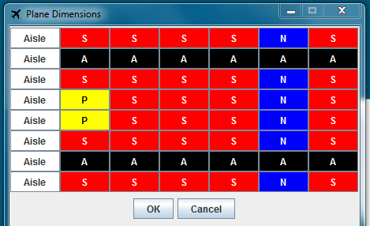

To create your own plane layout you first need to press the 'New Dimension'. This will present you with a box, first asking for the number of columns and then the number of rows for your plane. After you have specified the dimentions for the plane you will be presented with this screen.

There are a number of options you can change for your plane. By pressing on the buttons on the screen you will cycle through the different seating types. 'S' represents a normal seat, 'P' represents a priority seat and 'N' represents that there is no seat there. To create an aisle you press on the 'Aisle' button and that will create an aisle for the row selected.
All of these options allow you to create any plane layout you would like.
Once a plane has been created you can 'Edit' or 'Save' the plane from the main menu.